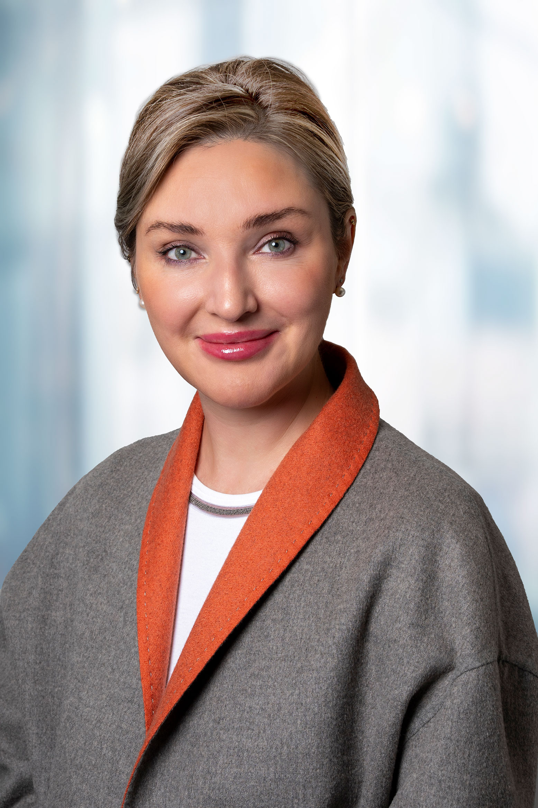

В Швейцарии — лучшая медицина в мире. Наша задача — открыть к ней дверь так, чтобы вы чувствовали себя гостем, а не пациентом.

Когда я основала CorSwiss, у меня была одна цель: сделать так, чтобы доступ к лучшей швейцарской медицине не зависел от языка, связей или удачи.
Я много лет работала внутри швейцарской системы здравоохранения и видела обе её стороны — безупречный уровень медицины и то, как трудно человеку извне сориентироваться: на чужом языке, в незнакомой системе, не зная, к какому профессору обратиться. Именно поэтому каждый случай я веду лично: подбираю не клинику, а конкретного врача, который подходит именно вам, и остаюсь рядом от первого разговора до возвращения домой.
Для нас не имеет значения, кто вы и какого масштаба ваши задачи. Здоровье — это самое личное, что есть у человека, и оно заслуживает внимания, времени и абсолютной конфиденциальности. Если вам или вашим близким нужна помощь — мы рядом, чтобы пройти этот путь вместе.
Юлия Хартманн основатель CorSwiss
Кто мы
CorSwiss — швейцарский медицинский консьерж. С 2011 года мы соединяем международных гостей с ведущими клиниками и профессорами Швейцарии.
Компания основана Юлией и Романом Хартманн. Юлия отвечает за медицинскую сторону каждого случая, Роман — за организацию, партнёрства и весь консьерж-сервис.
Мы — не агентство и не посредник. Мы лично знаем лучших специалистов в каждой области медицины и работаем с самыми авторитетными клиниками страны: университетскими клиниками, ведущими сетями частных клиник — такими как Swiss Medical Network и Hirslanden — и участниками сети Mayo Clinic Care Network.
Мы снимаем главные барьеры, с которыми сталкивается иностранный пациент: говорим на вашем языке, знаем систему изнутри и благодаря личным контактам обеспечиваем прямой доступ к профессорам, приоритетные сроки и программы, которые трудно получить самостоятельно.
Всё — из одних рук
Мы берём на себя не только медицину, но и всё вокруг неё:
Медицина
Подбор клиники и профессора, согласование программы и сметы, второе мнение.
Чекап и долголетие
Углублённая диагностика и longevity-программы мирового уровня.
Эстетика и пластическая хирургия
У ведущих специалистов Швейцарии, с гарантией приватности.
Медицинская виза
Прямой контакт со швейцарскими консульствами в странах наших гостей.
Транспорт
Личный водитель и VIP-сопровождение на месте, по желанию — перелёты вплоть до частного самолёта.
Переводчик
С медицинским опытом, на каждом приёме и в быту.
Проживание
Пятизвёздочные отели и резиденции.
Велнес и восстановление
Люксовые резорты в Альпах.
Досуг
Частные экскурсии по стране, персональный шопинг, лучшие рестораны.
Личный ассистент 24/7
На вашем языке, для любых вопросов.
Команда
Команда, которая всегда рядом
За каждым гостем стоит команда CorSwiss: медицинские координаторы, переводчики, водители и персональные ассистенты — все, кто нужен, чтобы вы чувствовали себя уверенно на каждом шаге.
Консультация